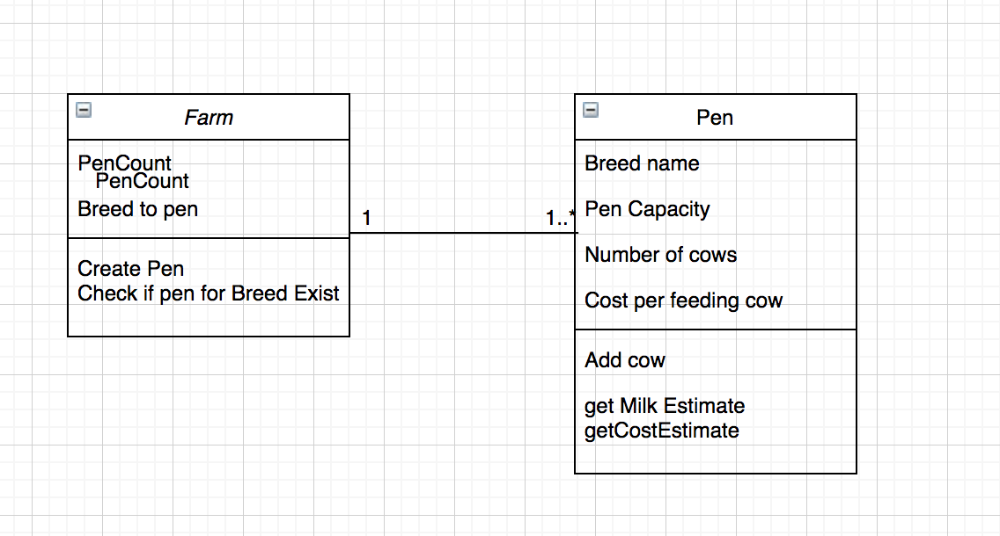

Understanding and Assumptions¶
It was understood clearly from the challenge description that a farm will have N pens - A room/barn where cows of same breed are put in. The objective of the challenge is to find out
Estimated milk each pen will produce
Cost to maintain each pen/Overall farm
Greenhouse gas generated in this scenario
In order to achieve the result, following assumptions and decision were made:
Each cow will produce 1 gallon of milk
- Few calculation were reduced to basic assumptions.
Milk Estimate = Number of days * number of cows in the pen
Cost estimation = Number of days * number of cows in the pen * cost per cow
3.Since, each pen will have one breed, the need for having a separate cow class was eliminated as no proper reasoning for having one was laid out.
Class and Relation¶
Implementation¶
To achieve the result, I made use of Python and have implemented the solution incorporation OOP as instructed.
Python- unittest library was used to perform the unit test.
The final result allows the user to
create pen(s) - User can create a single or multiple pens. Few details will be asked for each pen.Such as
Name of the breed
Total capacity of the pen
Cost for feeding one cow in the pen
Add cows - Allows user to add cows in the pen. Will prevent the user to add cows of breed for which pen doesn’t exist
Milk Estimate - Provide the estimate of the milk that can be produced in N days
Cost of Pen - Provides the estimated cost to feed pen for N days
Cost of Farm - Provides the estimated cost to feed all pens for N days